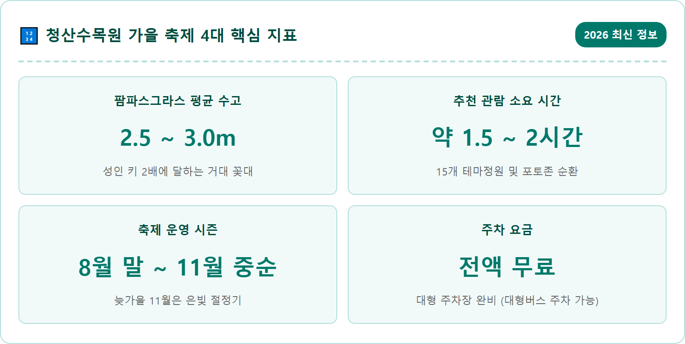
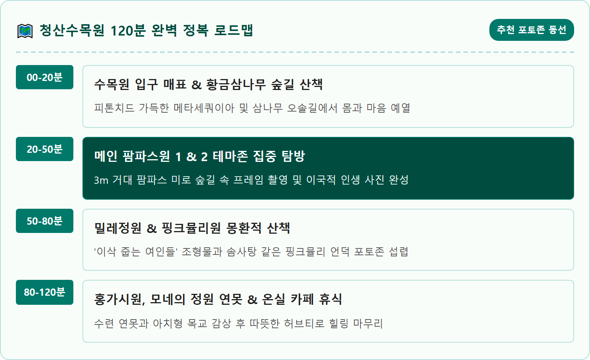
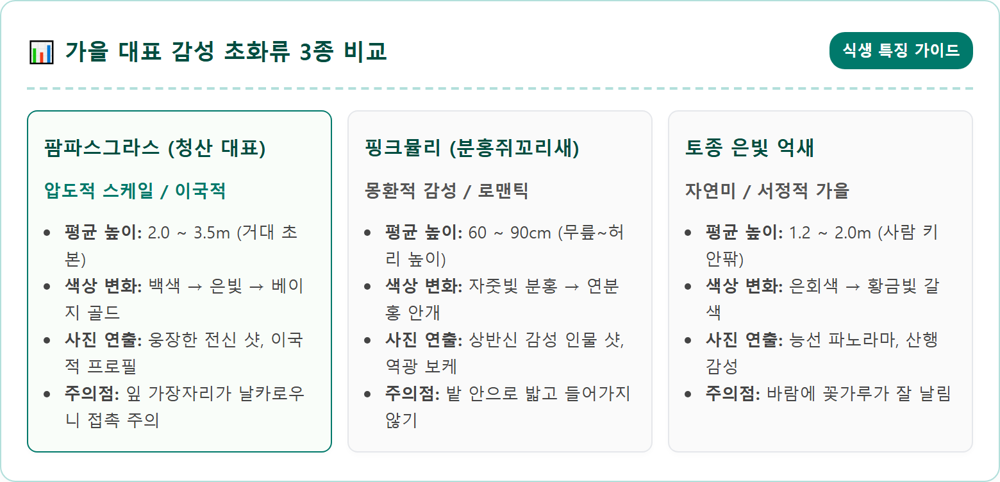
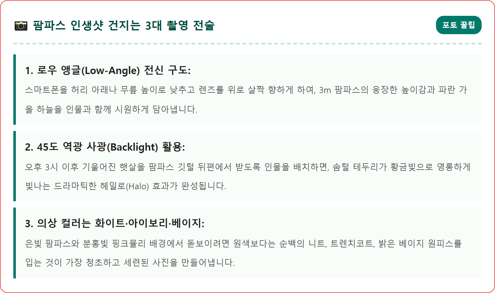
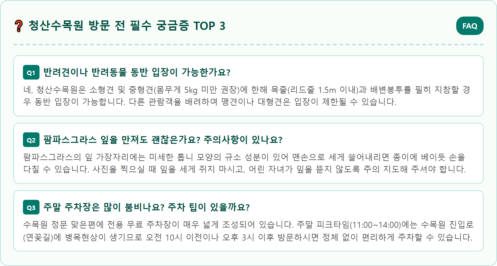

A picturesque landscape view of Cheongsan Arboretum in Taean, South Korea during peak autumn. Giant 3-meter tall fluffy silver pampas grass (Cortaderia selloana) plumes waving softly in the autumn breeze. Adjacent to the pampas garden is a dreamy pink muhly grass field glowing under the warm golden late afternoon sunlight. Charming rustic wooden walking trails wind through the garden with European style cottage fences. A cozy couple walks hand-in-hand along the cedar tree path in the background. Ultra high detail, 8k resolution, cinematic atmosphere, soft natural lighting, photorealistic autumn garden photography.

충청남도 태안군 남면 연꽃길에 자리 잡은 '청산수목원(淸山樹木園)'은 가을이 깊어질수록 서해안에서 가장 뜨거운 주목을 받는 생태 테마파크입니다. 약 10만㎡에 이르는 부지 위에 200여 종의 수생식물과 다양한 목본, 초본식물이 사계절 수려한 경관을 자아내지만, 늦가을 청산수목원의 진짜 주인공은 단연 '팜파스그라스(Pampas Grass)'입니다.
남미 아르헨티나의 광활한 초원지대(팜파스)가 원산지인 팜파스그라스는 키가 보통 2~3m에 달하고, 가을이면 줄기 끝에 거대한 새의 날개깃을 닮은 은백색 꽃이삭(화서)을 탐스럽게 피워냅니다. 일반 억새나 갈대와는 비교가 되지 않을 정도로 압도적인 웅장함과 볼륨감을 자랑하며, 바람이 불 때마다 은빛 깃털이 부드럽게 흩날리는 풍경은 마치 이국적인 외국 정원에 들어와 있는 듯한 환상적인 착각을 선사합니다.
10월의 팜파스가 뽀얗고 풋풋한 백색을 띠었다면, 11월의 팜파스는 늦가을 햇살을 머금어 한층 묵직하고 따스한 베이지색과 골드빛으로 무르익습니다. 서해의 청명한 가을 하늘과 맞닿은 팜파스 군락지 사이로 들어서면 어른의 키를 완전히 가리는 거대한 깃털 숲이 만들어져 걷는 내내 낭만적인 감성에 흠뻑 젖어들게 됩니다.

청산수목원의 가을이 독보적인 이유는 팜파스그라스 단일 식재에 머무르지 않고, 핑크뮬리(Pink Muhly)와의 감각적인 콜라보레이션을 완성해냈기 때문입니다. 수목원 중심부에 자리 잡은 '밀레정원' 주변으로는 거대한 분홍빛 솜사탕 같은 핑크뮬리 밭이 넓게 조성되어 있습니다.
하늘거리는 분홍빛 안개 속을 거닐다 보면 프랑스 바르비종파 화가 장 프랑수아 밀레의 대표작인 '이삭 줍는 여인들', '만종' 등의 테마를 입체 조형물로 형상화한 포토존들을 만날 수 있습니다. 서구적인 명화의 목가적 감성과 은빛 팜파스, 핑크빛 핑크뮬리가 3중으로 겹쳐지는 뷰는 국내 어디에서도 찾아보기 힘든 청산수목원만의 독보적인 시각적 시그니처입니다.
특히 핑크뮬리원 한가운데 설치된 나무 벤치와 하얀색 액자 조형물은 주말이면 촬영 대기줄이 길게 늘어설 정도로 인기가 높습니다. 햇살을 등지는 순광보다는 역광이나 사광(45도 각도)을 활용해 핑크뮬리를 촬영하면, 꽃잎 가장자리가 보석처럼 영롱하게 빛나며 피부톤까지 화사하게 살려주는 인생 사진을 담을 수 있습니다.

청산수목원은 계절에 따라 관람 시간과 입장 요금이 탄력적으로 조정됩니다. 팜파스 축제가 열리는 가을 성수기(9월~11월)에는 오전 8시 또는 8시 30분에 조기 오픈하여 오후 6시까지(입장 마감 오후 5시) 운영되므로, 주말 인파를 피해 이른 아침 방문하기에 안성맞춤입니다.
2026년 기준 현장 매표소 발권 요금은 일반 성인 12,000원, 청소년(중·고등학생) 8,000원, 유아 및 어린이(만 3세 이상) 7,000원입니다. 국가유공자나 만 65세 이상 경로우대자, 복지카드 소지자는 현장 신분증 제시 시 9,000원으로 할인 적용을 받을 수 있습니다.
알뜰한 여행을 위한 핵심 꿀팁은 '네이버 지도 스마트플레이스 사전 예매'입니다. 방문 당일 최소 1~2시간 전에 네이버를 통해 온라인 예매를 진행하면 성인 1인당 1,000~2,000원의 할인 혜택을 받을 수 있을 뿐만 아니라, 주말 현장 매표소의 긴 발권 대기줄을 거치지 않고 모바일 바코드 스캔만으로 빠르게 다이렉트 입장이 가능합니다.
청산수목원은 팜파스 외에도 구석구석 숨겨진 명품 조경 스팟들이 즐비합니다. 관람객들이 무심코 지나치기 쉽지만 사진작가들이 가장 사랑하는 5대 명소를 미리 체크해 두고 동선을 짜시면 훨씬 만족스러운 탐방이 됩니다.
첫 번째는 매표소를 지나 가장 먼저 마주하는 '삼나무 & 메타세쿼이아 숲길'입니다. 하늘을 찌를 듯 곧게 뻗은 침엽수림 사이로 비쳐드는 아침 햇살이 환상적인 빛내림(틴들 현상)을 만들어내어 싱그러운 숲속 요정 같은 사진을 연출할 수 있습니다. 두 번째는 '모네의 정원'으로, 프랑스 지베르니에 있는 화가 클로드 모네의 정원을 본떠 만든 수련 연못과 아치형 초록 목교가 클래식한 유럽의 낭만을 전해줍니다.
세 번째는 팜파스 숲이 미로처럼 얽혀 있는 '팜파스 미로정원'으로, 높은 화서 사이로 사람이 쏙 들어간 모습을 위에서 살짝 내려다보며 찍으면 미지의 정글을 탐험하는 듯한 극적인 앵글이 연출됩니다. 네 번째는 붉은 잎이 매력적인 '홍가시원', 그리고 다섯 번째는 가을 억새와 어우러진 유럽풍 분수대가 있는 '밀레의 광장'입니다. 5개 스팟 모두 배경과 인물의 조화가 뛰어납니다.

야외 수목원 출사에서 빛의 각도는 사진의 성패를 좌우하는 결정적 요소입니다. 청산수목원에서 가장 실패 없는 촬영을 원하신다면 하루 중 두 번의 마법 같은 시간대를 공략하셔야 합니다.
첫 번째 골든타임은 '오전 8시 30분 ~ 10시'입니다. 수목원 문이 열리자마자 입장하면 단체 관광객이나 주말 인파가 없어 팜파스 미로길 전체를 프라이빗하게 독점할 수 있습니다. 특히 이 시간대에는 서해안 아침 이슬이 팜파스 깃털에 송글송글 맺혀 있다가 맑은 아침 햇살에 증발하며 신비로운 숲의 기운을 뿜어냅니다.
두 번째 골든타임은 '오후 3시 30분 ~ 5시'입니다. 서쪽 안면도 앞바다 너머로 해가 기울며 낮게 내리쬐는 주황빛 석양은 팜파스의 은빛 화서를 샴페인 골드빛으로 눈부시게 물들입니다. 핑크뮬리 역시 낮 시간대의 쨍한 핫핑크에서 은은하고 몽환적인 코랄 핑크로 색온도가 변하여 감성적인 스냅 사진을 촬영하기에 가장 완벽한 캔버스를 제공합니다.
청산수목원의 전체 관람 코스는 약 2.5km 내외로, 천천히 사진을 찍으며 산책할 경우 평균 1시간 30분에서 2시간 정도 소요됩니다. 야산이나 가파른 언덕이 아닌 평평한 간척지 및 구릉성 평지에 조성되어 있어 전반적인 보행 난이도는 매우 쉬운 편입니다.
주요 관람로 대부분은 마사토 흙길과 야자매트(코코넛 매트), 그리고 나무 데크로드로 포장되어 있어 유모차나 휠체어도 비교적 수월하게 진입할 수 있습니다. 다만 팜파스 군락지 안쪽의 좁은 미로 샛길 구간은 통로 폭이 좁고 팜파스 잎이 양옆으로 뻗어 나와 있으므로, 유모차를 동반한 가족은 메인 순환로를 중심으로 관람하시길 권장합니다.
또한 수목원 곳곳에 정자와 목재 벤치, 잔디 쉼터가 넉넉하게 배치되어 있어 부모님이나 어린아이가 중간에 다리가 아플 때 언제든 쉬어갈 수 있습니다. 출구 인근에는 온실형 카페 '홍가시 카페'가 운영되고 있어 시원한 음료나 따뜻한 수제 차 한잔을 마시며 편안하게 휴식을 취할 수 있습니다.

자가용 방문 시 내비게이션에 '청산수목원' 또는 '충남 태안군 남면 연꽃길 70'을 입력하시면 됩니다. 수목원 정문 건너편에 약 300대 이상의 차량을 동시 수용할 수 있는 비포장 무료 주차장이 완비되어 있어 주차비 부담이 전혀 없습니다.
하지만 가을철 태안과 안면도로 향하는 유일한 간선도로인 77번 국도는 주말 오전 10시부터 오후 1시 사이 서해안고속도로 서산IC 및 당진IC 방면에서 쏟아지는 관광 차량으로 인해 극심한 정체가 발생합니다. 특히 서산 시내를 거쳐 태안 남면으로 내려오는 구간이 병목 지점입니다.
이 정체를 피하는 스마트한 우회로는 서해안고속도로 '홍성IC'로 진출하여 서산간척지 방조제 도로(AB지구 방조제 및 간월호 도로)를 타고 남면으로 곧바로 진입하는 동선입니다. 바다와 호수가 시원하게 펼쳐진 방조제 드라이브를 즐기면서 시내 병목 구간을 우회할 수 있어 주말 기준 이동 시간을 20~30분 이상 단축할 수 있습니다.
청산수목원은 국내의 대형 사립 수목원 중 드물게 반려동물 동반 입장을 전향적으로 허용하는 펫 프렌들리(Pet-Friendly) 관광지입니다. 팜파스 숲과 핑크뮬리를 배경으로 사랑하는 반려견과 함께 견생샷을 남기려는 펫펨족들의 발길이 끊이지 않습니다.
하지만 많은 관람객이 함께 이용하는 공공의 자연 공간인 만큼 엄격한 펫티켓 준수가 요구됩니다. 목줄(리드줄)은 항시 1.5m 이내로 짧게 유지해야 하며, 마킹(소변 표시) 방지를 위한 매너벨트 착용이나 배변 봉투 지참 및 즉각적인 수거는 필수 의무입니다.
또한 팜파스 잎의 날카로운 모서리에 호기심 많은 강아지의 눈이나 코가 다치지 않도록 세심하게 주의를 기울여야 합니다. 포토존에서 촬영할 때는 반려견을 품에 안거나 전용 개모차(펫 유모차)에 태워 촬영하시면 안전사고 없이 가장 예쁜 가을 추억을 기록할 수 있습니다.
청산수목원 관람을 여유롭게 마친 후에는 태안 남부의 청정 바다와 제철 해산물 미식을 엮어 완벽한 당일치기 드라이브 여행을 완성해 보시기 바랍니다.
수목원에서 차량으로 단 10분 거리에 위치한 '몽산포 해수욕장'은 완만한 백사장과 울창한 해송 숲(곰솔림)이 어우러진 서해안 최고의 힐링 해변입니다. 물이 빠지면 드넓은 갯벌이 드러나 맛조개 잡이 체험을 즐길 수 있으며, 해질 무렵 백사장 너머로 붉게 떨어지는 몽산포 일몰은 서해 3대 낙조로 손꼽힐 만큼 장엄합니다.
금강산도 식후경인 만큼 태안 여행의 마무리는 제철 '꽃게 요리'가 장식해야 합니다. 인근 백사장항이나 안면도 초입 식당가에 들러 알이 꽉 찬 간장게장과 칼칼하고 구수한 꽃게탕, 그리고 묵은지를 넣고 시원하게 끓여낸 태안 향토음식 '게국지' 한 상을 맛보시길 추천합니다. 진하고 달큼한 가을 꽃게살이 입안 가득 퍼지며 오감을 만족시키는 최고의 미식 기행이 될 것입니다.
| 구분 | 상세 정보 | 이용 팁 |
|---|---|---|
| 위치 | 충청남도 태안군 남면 연꽃길 70 (청산수목원) | 내비게이션: 청산수목원 검색 (정문 무료 주차장 완비) |
| 운영 시간 | 08:00 ~ 18:00 (입장 마감 17:00 / 연중무휴) | 오전 9시 이전 또는 오후 3시 30분 이후 골든타임 추천 |
| 입장료 | 성인 12,000원 / 청소년 8,000원 / 유아 7,000원 | 네이버 온라인 사전 예매 시 1,000~2,000원 할인 혜택 |
| 대표 볼거리 | 팜파스 미로원, 핑크뮬리원, 밀레정원, 삼나무숲 | 어른 키 2배 팜파스와 핑크뮬리 투샷 포토존 |